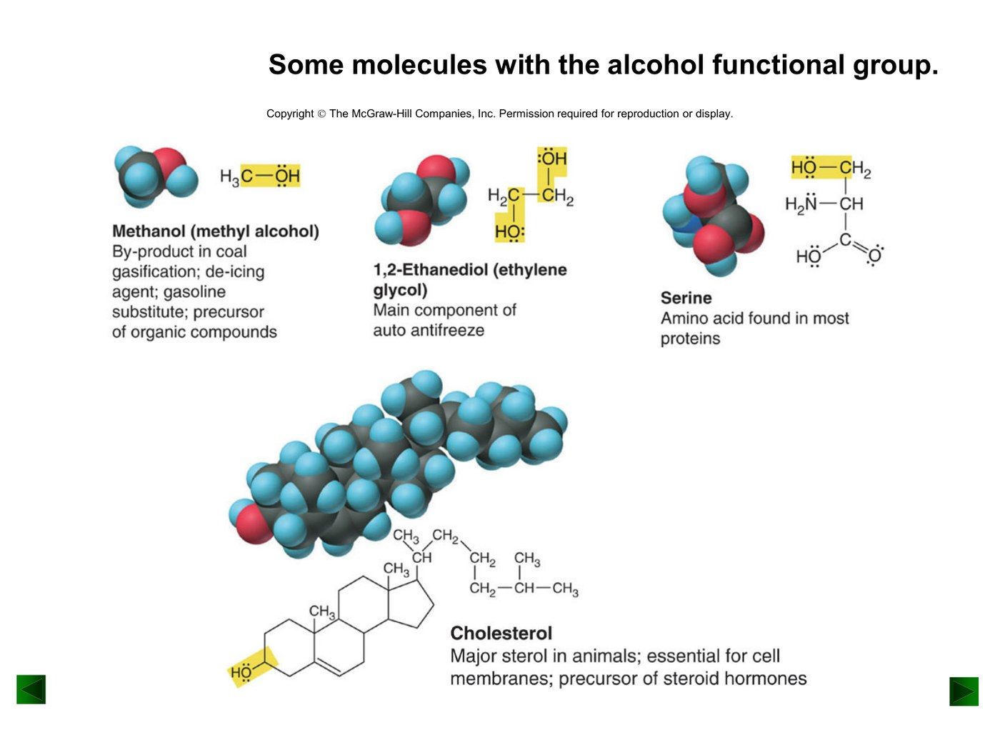
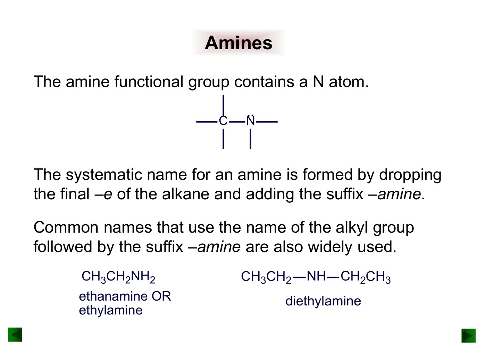

CHE105 · 第 3 章
有机反应类型与官能团
Organic Reactions & Functional Groups
虚线下划线为术语；悬停查看中文、英文与释义，完整词典见“术语”。
本章目录
有了结构和命名，下一步是看分子怎么变。本章建立三种基本反应类型（加成、消除、取代）的判据，再用官能团把整本讲义串起来：醇、卤代烷、胺、烯烃、芳香烃、醛酮、羧酸及其衍生物，各自能做什么反应。
本章要点
- 三种基本反应类型：加成（不饱和→饱和）、消除（饱和→不饱和）、取代（原子或基团被替换）。
- 加成反应中断裂的是 π 键，σ 键保持不变；C=C、C≡C、C=O 都常见加成。
- 溴水褪色是 C=C 的检验方法：橙棕色消失说明发生了加成。
- 消除是加成的逆过程，驱动力是生成 HCl、H2O 这类小而稳定的分子。
- 判断反应类型只看一件事：与碳成键的原子数变多、变少，还是不变。
- 有机氧化还原按"与 O 成键增多/与 H 成键减少"判断，不看电子转移数。
- 官能团同时决定物理性质（极性→分子间作用力）与化学性质（富电子/缺电子区域）。
- 羧酸衍生物（酯、酰胺、酰氯）之间可以互相转化，水解与皂化是同一类反应的不同条件。
3.1 三类基本反应
讲义开篇先做了一道回顾题，把前面两章的同分异构串了起来：能具有构造异构体的最简单烷烃是 C4H10；能具有光学异构体的最简单烷烃是 C7H16；能具有几何异构体的最简单烯烃是 C4H8。三个答案对应三种不同的"不对称"要求，值得对照记忆。
进入正题。有机反应按"不饱和度如何变化"分成三大类。加成反应addition reaction：不饱和的反应物变成饱和的产物，两个原子或基团加到双键（或三键）的两端。消除反应elimination reaction：饱和的反应物变成不饱和的产物，分子中脱去两个基团并生成一个新的 π 键。取代反应substitution reaction：一个试剂中的原子或基团，替换掉另一个反应物中连在碳上的原子或基团，饱和度不变。
三类反应的通式可以并排写出来对照：加成是 A=B + X–Y → X–A–B–Y；消除是它的逆过程 X–A–B–Y → A=B + X–Y；取代是 R–X + Y → R–Y + X。理解了这一点，后面所有具体反应都只是在填这三个格子。
Clean vector diagram of three reaction types in three stacked rows: addition showing a C=C double bond plus X-Y becoming a saturated chain with X and Y added, elimination showing the reverse with a new double bond and X-Y released, and substitution showing R-X plus Y becoming R-Y plus X. Each row is labeled addition, elimination, substitution, and a small arrow marks the pi bond that breaks or forms. Flat 2D, thin 1.5 px strokes, muted slate blue and warm grey palette, white background, English labels, no cartoon, no gradient, no shadow.
L3 p.1、p.4
3.2 加成反应与溴水检验
能发生加成的键有三类：C=C、C≡C 与 C=O。它们的共同点是都含 π 键。π 键由 p 轨道侧向重叠形成，电子云暴露在键轴之外，能量较高、容易被进攻；σ 键由头碰头重叠形成，电子云集中在两核之间，能量较低、稳定。所以加成反应的结果总是：π 键断裂，σ 键保留。
能量上可以用键能账本核对。以乙烯加 HCl 为例，断裂的键是 1 根 C=C（614 kJ）、4 根 C–H（4 × 413 = 1652 kJ）与 1 根 H–Cl（427 kJ），合计 2693 kJ；生成的键是 1 根 C–C（347 kJ）、5 根 C–H（5 × 413 = 2065 kJ）与 1 根 C–Cl（339 kJ），合计 2751 kJ。反应焓变等于"断键之和减去成键之和"：2693 − 2751 = −58 kJ，负号表示放热。这个数字不大，说明加成在能量上是温和有利的，而不是剧烈爆发的。
加成反应有一个非常实用的颜色检验。溴（Br2）的溶液呈橙棕色；把它滴入含 C=C 的化合物，溴加成到双键上，橙棕色随之消失；把它滴入不含 C=C 的化合物（例如烷烃），颜色不褪。讲义用一支滴管演示了这个对比——这是实验室里判断"有没有不饱和键"最快的方法。
Clean vector laboratory diagram in two panels: left panel shows a test tube of orange-brown bromine solution added to a compound with a C=C bond, with the colour fading to colourless and the addition product drawn beside it; right panel shows the same bromine solution added to a saturated alkane with no C=C bond, with the orange-brown colour unchanged. Flat 2D, thin 1.5 px strokes, muted slate blue and warm grey palette with one orange accent for bromine, white background, English labels, no cartoon, no gradient, no shadow.
L3 p.5–7
3.3 消除反应：加成的倒放
消除反应是加成的逆过程：饱和的反应物脱去两个基团，生成一个 π 键，产物变为不饱和。讲义明确指出，被脱去的两个基团通常是"H 加一个卤素"或"H 加一个 –OH"。前者见于卤代烷，后者见于醇的脱水。
反应为什么愿意往这个方向走？驱动力不是生成了更复杂的分子，而是生成了一个小而立稳定的分子，例如 HCl(g) 或 H2O。把一个小分子从体系中"抽走"，熵增加，平衡被拉动。以环己醇脱水为例，在酸催化下生成环己烯与水，产物水被移走，反应持续向右。
消除与取代往往是一对竞争反应：同一个卤代烷遇碱，既可以发生取代（–OH 换掉卤素），也可以发生消除（脱去 HX 生成烯烃）。哪条路占优，取决于底物结构、碱的强弱与位阻、以及温度——这些细节在后续章节展开，本章只需先认清两个方向都存在。
L3 p.8–9
3.4 取代反应：换一个基团
取代反应的定义是：加入的试剂中的原子或基团，替换掉有机反应物中连在碳上的原子或基团。发生取代的碳可以是饱和的，也可以是不饱和的；被换上的基团 Y 与被换下的基团 X 可以是很多种原子或基团。通式写作 R–X + Y → R–Y + X。
讲义用香蕉油的香气成分说明这类反应在日常化学中的存在：乙酰氯（ethanoyl chloride，CH3COCl）与异戊醇反应，生成乙酸异戊酯（isoamyl acetate）与 HCl。乙酸异戊酯就是酯ester，是香蕉油的主要香气成分。这个反应的骨架变化很干净：C–Cl 键被 C–O 键替换，其余部分不动，是典型的取代。
取代反应的常见家族包括：卤代烷被 –OH、–OR、–CN、–NH2 取代；醇的 –OH 被卤素取代；羧酸的 –OH 被 –OR 取代（生成酯）；酰氯的 –Cl 被各种亲核试剂取代。它们后来会被统一到"亲核取代"的框架下（第五章、第十一章）。
L3 p.10–11
3.5 三步判断反应类型
讲义给了一个极简的判据：只看与碳成键的原子数目如何变化。与碳成键的原子变多了，是加成；变少了，是消除；数目不变，是取代。这个判据不需要判断官能团，也不需要背反应式，只需要数一数目标碳周围挂了几个原子。
用三道题验证。(a) 1-溴丙烷与 HBr 加热，生成丙烯：反应物中该碳连着 H、C、C、Br 四个原子，产物中只连着 C、C、H 三个，少了一个，是消除。(b) 某烯烃加 H2：产物中每个双键碳多了两个 C–H 键，原子数增加，是加成。(c) 乙酰溴与乙醇反应生成乙酸乙酯与 HBr：反应物的 C–Br 键被 C–O 键替换，碳上挂的原子数不变，是取代。
这套判据的价值在于它绕过了"反应叫什么名字"的表面问题。很多反应在教材里有专门的名称（水合、脱水、酯化、皂化、氨解），但归类时只看原子数的增减，答案立刻唯一。
L3 p.12–13
3.6 有机氧化还原
有机化学里的氧化还原不用氧化数，而是看碳与氧、碳与氢的成键数目。规则有两条，方向相反：
- 一个碳与氧成键增多，或与氢成键减少，它失去了电子密度，被氧化，这个反应叫氧化。
- 一个碳与氧成键减少，或与氢成键增多，它得到了电子密度，被还原，这个反应叫还原。
这套判据与"加氧去氢为氧化、加氢去氧为还原"的口诀一致，但更精确：它盯住的是同一个碳原子的成键变化，而不是整个分子。举例来说，2-丁醇（CH3CH(OH)CH2CH3）用 K2Cr2O7/H2SO4 氧化为 2-丁酮：原来连着一个 O 和一个 H 的碳，变成了连着两个 O（双键）的碳——C–O 键从 1 根变 2 根，C–H 从 1 根变 0 根，两个方向都指向氧化。
反过来，醛或酮被 NaBH4 或 LiAlH4 还原为醇，是 C=O 变成 C–OH：C–O 从双键变单键，同时新增一根 C–H，两个方向都指向还原。这一对反应在第六章还会再遇到，那里关注的是机理而不是分类。
L3 p.14、p.19
3.7 官能团：一张总表
官能团functional group是按特定方式连接在一起的一群原子。有机化合物按官能团分类，因为官能团同时决定两件事：物理性质与化学反应性。
对物理性质的作用通过极性实现。官能团改变分子的极性，从而决定它表现出哪种分子间作用力intermolecular force：非极性的烷烃只有色散力，沸点低；能形成氢键的醇、羧酸沸点高；能形成氢键的胺比同质量的烃或卤代烷沸点高。对化学性质的作用通过电子密度实现：官能团划出了分子中电子密度高与低的区域，反应的"入口"和"出口"就在这里。
讲义列出的主要官能团家族，按本章顺序是：醇（–OH）、卤代烷（–X）、胺（–N）、烯烃（C=C）、芳香环、醛（–CHO）、酮（C=O）、羧酸（–COOH）、酯（–COO–）、酰胺（–CONH–）、炔（C≡C）、腈（–C≡N）。每一类都有自己的命名后缀与标志性反应，下面逐类展开。
L3 p.15–17
3.8 醇与卤代烷
醇alcohol的官能团是连在碳上的 –OH。命名时把母体烃名末尾的 –e 换成 –ol，例如 cyclohexanol、2-butanol。醇的熔点与沸点显著高于同碳数的烷烃，原因是分子间能形成氢键hydrogen bond——O–H 上的氢带部分正电，另一分子的氧带部分负电，两者相互吸引。
醇能发生两类反应。第一类是消除（脱水）：在酸催化下，–OH 与相邻碳上的 H 一起脱去，生成烯烃与水，例如环己醇 → 环己烯 + H2O。第二类是氧化：用重铬酸钾（K2Cr2O7）在硫酸中进行，仲醇被氧化为酮，例如 2-丁醇 → 2-丁酮，碳上原来的 C–OH 单键变成了 C=O 双键。醇也能发生取代，–OH 被卤素替换。
卤代烷haloalkane（也叫烷基卤，alkyl halide）的官能团是连在碳上的卤素。命名时把卤素作为前缀写在烃名前，并标出承载卤素的那个碳的编号，例如 1-bromobutane、2-chloro-2-methylpropane。
卤代烷同样走取代与消除两条路。取代：1-溴丁烷与 OH− 反应生成 1-丁醇与 Br−。消除：2-氯-2-甲基丙烷与乙醇钾（potassium ethoxide）反应，生成 2-甲基丙烯、乙醇与 KCl——碱夺取相邻碳上的氢，卤素带着电子对离开，中间形成新的 π 键。同一底物、同一类试剂，条件不同就走向不同产物，这是本章最需要建立的直觉。

L3 p.18–22
3.9 胺
胺amine的官能团含氮。系统命名把烷烃名末尾的 –e 换成 –amine，例如 ethanamine；也广泛使用"烷基名 + amine"的俗名，例如 ethylamine、diethylamine。
胺按直接连在氮上的 R 基数目分为一级（1°）、二级（2°）、三级（3°）。这个分类与醇的伯仲叔不同——它数的是氮上的取代基数，不是碳上的。讲义给的生物分子例子正好覆盖三级：赖氨酸（lysine）是一级胺，腺嘌呤（adenine）是一级胺，肾上腺素（epinephrine/adrenaline）是二级胺，可卡因（cocaine）是三级胺。
性质上，一级与二级胺能形成氢键（因为 N–H 上的氢带部分正电），所以熔点、沸点高于同质量的烃或卤代烷。三级胺没有 N–H 键，分子间不能形成氢键。低摩尔质量的胺有鱼腥味、溶于水、呈弱碱性——碱性来自氮上的孤对电子，它可以接受一个质子。胺也参与多种反应，包括取代反应。

L3 p.23–26
3.10 烯烃与芳香烃
烯烃的化学核心是那个富电子的双键。讲义明确写道：烯烃的电子云密度高的双键容易被 H3O+ 与氢卤酸中带部分正电的氢吸引，于是发生加成。例如 2-甲基丙烯与 H3O+ 反应，生成 2-甲基-2-丙醇——水加成到双键上，产物是醇。
芳香烃的表现完全不同。苯是共振杂化体resonance hybrid，它的 π 电子离域在整个环上。这种离域带来了额外的稳定性：苯在氢化时放出的能量比"预期"少，因为它本身已经比一个假想的、含三个孤立双键的烯烃稳定得多。讲义用"假想分子"作对照来说明这一点。
稳定性的直接后果是反应性的改变：芳香化合物虽然含有双键，却不发生加成，而走取代。苯与 Br2 在 FeBr3 催化下生成溴苯与 HBr——溴替换掉环上的一个氢，环的芳香性得以保留。如果发生加成，离域的 π 体系被破坏，稳定性丧失，能量上不利。这条"芳香环保命靠取代"的原则会贯穿第七章。
L3 p.29–31
3.11 醛与酮
醛与酮都含羰基carbonyl group C=O。醛的羰基碳上连一个 H 和一个 R，命名把烷烃名末尾的 –e 换成 –al（methanal、ethanal）；酮的羰基碳上连两个 R，后缀为 –one，并且必须标出羰基的位置（2-propanone、2-butanone）。这个差别看似只是拼写，实际上决定了两者的结构差异——醛的羰基碳上有一个氢，酮的羰基碳上两个方向都是碳链。
讲义列的常见例子兼顾了工业与生物：甲醛（methanal）用于制造胶合板树脂、餐具、台面，也作生物防腐剂；乙醛（ethanal）是乙醇代谢的产物，用于制香料、香精、塑料；丙酮（2-propanone）是脂肪、橡胶、塑料、清漆的溶剂；2-丁酮是重要溶剂；苯甲醛（benzaldehyde）是人工杏仁香精。
C=O 键既富电子又高度极化：氧电负性大，把电子拉向自己，碳因此缺电子。这个"富电子的氧 + 缺电子的碳"的组合，使羰基极易发生加成——富电子的基团进攻缺电子的碳。讲义给了两个例子：环丁酮还原为环丁醇（加氢，属于加成）；有机金属化合物（金属与碳共价成键）加到羰基碳上，例如 R'Li 与醛反应，水解后得到多一个碳的醇。
这两个例子说明羰基加成的两种主要用途：还原得到醇，以及形成新的 C–C 键。第六章会把这条主线完整展开。
L3 p.32–35
3.12 羧酸家族：酸、酯、酰胺、腈
羧酸carboxylic acid含 –COOH，命名把烷烃的 –e 换成 –oic acid（methanoic acid、butanoic acid）。它是弱酸，在水中只部分解离，但能与强碱定量反应：甲酸 + NaOH → 甲酸钠 + H2O。讲义列的天然例子包括蚂蚁与蜜蜂蜇刺中的甲酸、酸败黄油气味的丁酸、动物脂肪中的硬脂酸、作为食品防腐剂与染料助剂的苯甲酸。
酯ester由醇与羧酸反应生成，通式 –COO–。乙酸与甲醇在酸催化下生成乙酸甲酯与水，这个反应叫酯化esterification，本质是脱水缩合（dehydration-condensation）。酯广泛存在于脂类中，而脂类正是脂肪酸酯化的产物。酯水解可以用酸，也可以用碱；用碱时叫皂化saponification——三酰甘油（triglyceride）与 3 份 NaOH 加热，生成甘油与三个脂肪酸钠盐，后者就是肥皂。这是从油脂制皂的工业过程。
酰胺amide含 –CONH–，可以水解成羧酸与胺。蛋白质中连接氨基酸的肽键peptide bond就是酰胺键，这一点让酰胺成为生物化学里最重要的官能团之一。讲义举的例子包括二甲基甲酰胺（DMF，重要有机溶剂）与对乙酰氨基酚（acetaminophen，非阿司匹林类止痛药的有效成分）。
腈nitrile含 –C≡N，由卤代烷与 CN− 经取代反应制得：CH3CH2Cl + NaCN → CH3CH2CN + NaCl。炔烃则含富电子的 –C≡C–，容易发生加成：丙炔加一分子 H2 得丙烯，再加一分子得丙烷。讲义还补充，P 与 S 也能形成与有机化合物类似的酸、酸酐与酯——例如葡萄糖-6-磷酸是磷酸酯，磺胺（sulfanilamide）是磺酰胺。
Clean vector reaction scheme of saponification: a triglyceride drawn with a glycerol backbone esterified to three fatty acid chains, an arrow labeled 3 NaOH and heat, then two product panels showing glycerol and three fatty acid sodium salts labeled soap. Flat 2D, thin 1.5 px strokes, muted slate blue and warm grey palette, white background, English labels, no cartoon, no gradient, no shadow.
L3 p.38–50